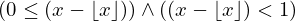
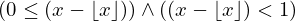
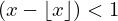
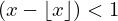
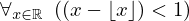

Show the Proof¶
In [1]:
import proveit
# Automation is not needed when only showing a stored proof:
proveit.defaults.automation = False # This will speed things up.
proveit.defaults.inline_pngs = False # Makes files smaller.
%show_proof
Out[1]:
| step type | requirements | statement | ||
|---|---|---|---|---|
| 0 | instantiation | 1, 2, 3 |  ⊢  ⊢  | |
 : :  , ,  :  :  | ||||
| 1 | theorem | ⊢  | ||
| proveit.logic.booleans.conjunction.and_if_both | ||||
| 2 | instantiation | 4, 6 | ⊢  | |
 : : | ||||
| 3 | instantiation | 5, 6 | ⊢ | |
| : | ||||
| 4 | theorem | ⊢  | ||
| proveit.numbers.rounding.real_minus_floor_lower_bound | ||||
| 5 | theorem | ⊢  | ||
| proveit.numbers.rounding.real_minus_floor_upper_bound | ||||
| 6 | assumption | ⊢ | ||